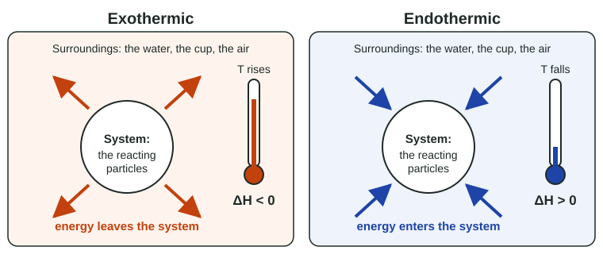

Endothermic and Exothermic Processes
Every process moves energy between a system and its surroundings.
Part 1 · Hook
Why this matters
Part 2 · Before you start
What this builds on
Part 3 · Prerequisite check
Quick check before you start
1. When the average kinetic energy of the particles in a sample increases, what happens to its temperature?
- It rises
- It falls
- It stays the same
- It depends only on the mass
Show the answer
Temperature measures the average kinetic energy of the particles: faster particles, higher temperature.
- Correct: It rises:
- It falls:
- It stays the same:
- It depends only on the mass:
2. Which is needed to pull two bonded atoms apart?
- An input of energy
- A release of energy
- No energy at all
- A lower temperature
Show the answer
Bonded atoms sit at the bottom of a potential energy well; separating them takes energy equal to the bond energy.
- Correct: An input of energy:
- A release of energy:
- No energy at all:
- A lower temperature:
3. When water vapor condenses, what forms between the molecules?
- Hydrogen bonds
- New O–H covalent bonds
- Ionic bonds
- Nothing; they just slow down
Show the answer
Condensation brings molecules close enough for intermolecular attractions, here hydrogen bonds, to hold them together.
- Correct: Hydrogen bonds:
- New O–H covalent bonds:
- Ionic bonds:
- Nothing; they just slow down:
Part 4 · See it
See it first

Part 5 · Step by step
How it works, step by step
- Breaking bonds or attractions between particles requires energythe system must absorb energy for that step
- Forming bonds or attractions lets particles settle to lower potential energythe system releases energy for that step
- If forming releases more than breaking absorbsenergy leaves the system: exothermic, ΔH < 0, and the surroundings warm
- If breaking absorbs more than forming releasesenergy enters the system: endothermic, ΔH > 0, and the surroundings cool
- A thermometer in the water measures the surroundingsa rising temperature means an exothermic process, a falling one an endothermic process
Part 6 · Key ideas
Key ideas
- The system is the part you study, usually the reacting particles; the surroundings are everything else, including the water they are in.
- Exothermic: energy leaves the system, the surroundings warm, ΔH is negative.
- Endothermic: energy enters the system, the surroundings cool, ΔH is positive.
- Breaking bonds or attractions absorbs energy; forming them releases energy. The balance sets the sign of ΔH.
- Physical changes count: melting and evaporating are endothermic; freezing and condensing are exothermic.
Part 7 · Misconception
A common mistake
The wrong idea: A reaction that makes the water hot has absorbed heat, so it is endothermic.
What actually happens: The water is the surroundings. Hot water means the reaction gave energy away, so the reaction is exothermic and ΔH is negative.
Part 8 · Check yourself
Check yourself
Exam-style questions. Anything you miss goes into your review queue.
Data table
Four processes in an insulated cup
A student runs four processes, one at a time, in an insulated foam cup holding 50.0 g of water. She records the water temperature before and after each one.
| Process | What is added to the water | Starting temperature (°C) | Final temperature (°C) |
|---|---|---|---|
| A | Solid calcium chloride, which dissolves | 21.0 | 34.6 |
| B | Solid ammonium nitrate, which dissolves | 21.0 | 11.8 |
| C | Magnesium ribbon, into dilute hydrochloric acid | 21.0 | 39.2 |
| D | Baking soda, into dilute citric acid solution (fizzes) | 21.0 | 16.5 |
1. Which processes are endothermic? Select all that apply.
- Process A, dissolving calcium chloride
- Process B, dissolving ammonium nitrate
- Process C, magnesium in hydrochloric acid
- Process D, baking soda in citric acid
Show the answer
The water is the surroundings. When it cools, the process (the system) took energy from it: endothermic. When it warms, the process gave energy to it: exothermic.
- Process A, dissolving calcium chloride: The water warmed from 21.0 °C to 34.6 °C, so the dissolving released energy into it: exothermic.
- Correct: Process B, dissolving ammonium nitrate: The water cooled from 21.0 °C to 11.8 °C: the dissolving drew energy out of the water, so it is endothermic.
- Process C, magnesium in hydrochloric acid: The water warmed to 39.2 °C, so the reaction released energy: exothermic.
- Correct: Process D, baking soda in citric acid: The water cooled to 16.5 °C: the reaction absorbed energy from the water, so it is endothermic.
2. Which statement describes the energy change in Process B?
- Cold moves out of the dissolving solid into the water, so the water cools.
- Energy moves from the water into the dissolving solid, so the water cools.
- Energy moves from the dissolving solid into the water, so the water cools.
- No energy moves; the water cools because the solid was colder to begin with.
Show the answer
The water's temperature fell by 9.2 °C, so its particles slowed down: energy left the water and went into the dissolving process.
- Cold moves out of the dissolving solid into the water, so the water cools.: "Cold" is not a thing that moves. Only energy moves, and here it leaves the water.
- Correct: Energy moves from the water into the dissolving solid, so the water cools.: Right: the dissolving particles absorb energy from the water around them, and the water's temperature drops.
- Energy moves from the dissolving solid into the water, so the water cools.: Backward: if the water gained energy, its particles would speed up and its temperature would rise.
- No energy moves; the water cools because the solid was colder to begin with.: The solid was at room temperature. The 9.2 °C drop comes from energy absorbed as the solid dissolves.
3. What is the sign of ΔH for the reaction in Process C, and why?
- Positive, because the water gained energy and its temperature rose
- Positive, because a rising temperature means a positive change
- Negative, because the reaction released energy that warmed the water
- Zero, because the insulated cup kept the energy inside it
Show the answer
ΔH is the energy change of the system. The water warmed because the reaction gave it energy, so the reaction lost energy: ΔH is negative.
- Positive, because the water gained energy and its temperature rose: This describes the water, which is the surroundings. ΔH describes the reaction, which lost that energy.
- Positive, because a rising temperature means a positive change: The sign of ΔH follows the system's energy, not the thermometer reading in the surroundings.
- Correct: Negative, because the reaction released energy that warmed the water: Right: energy left the system (the reaction) and entered the surroundings (the water), so ΔH < 0.
- Zero, because the insulated cup kept the energy inside it: The cup keeps energy in the water, but the energy still moved from the reaction to the water.
4. A classmate writes: "Process A is endothermic, because the solution absorbed heat and got warmer." Which correction is best?
- The water warmed because the cup trapped energy from the air, so the process is neither.
- The classmate is right, because any process that ends up warmer has taken in energy.
- The process is endothermic, because dissolving a solid breaks its ions apart.
- The water warmed because the dissolving released energy to it, so the process is exothermic.
Show the answer
Always ask what is being measured. The thermometer reads the water (surroundings). A warmer surroundings means the system released energy: exothermic.
- The water warmed because the cup trapped energy from the air, so the process is neither.: The cup is insulated to keep the room out; the 13.6 °C rise came from the dissolving itself.
- The classmate is right, because any process that ends up warmer has taken in energy.: The water ended warmer because it received energy; the process that gave the energy is exothermic.
- The process is endothermic, because dissolving a solid breaks its ions apart.: Separating ions does absorb energy, but here more energy is released than absorbed overall, so the water warms.
- Correct: The water warmed because the dissolving released energy to it, so the process is exothermic.: Right: the classmate described the surroundings. The system, the dissolving, gave energy away.
5. Which of these processes are exothermic? Select all that apply.
- Liquid water freezing into ice
- Ice melting on a countertop
- Steam condensing on a cool bathroom mirror
- Sweat evaporating from your skin
- Dry ice (solid carbon dioxide) turning directly into gas
- Natural gas (methane) burning on a stove
Show the answer
Processes that form attractions or strong bonds release energy: freezing, condensing and burning. Melting, evaporating and subliming absorb it.
- Correct: Liquid water freezing into ice: Hydrogen bonds form as the molecules lock into place, which releases energy.
- Ice melting on a countertop: Melting overcomes attractions between molecules, which absorbs energy from the counter and air.
- Correct: Steam condensing on a cool bathroom mirror: Attractions form as the gas becomes liquid, so energy goes into the mirror and it fogs while warming slightly.
- Sweat evaporating from your skin: Evaporation pulls molecules apart, absorbing energy from your skin; that is why it cools you.
- Dry ice (solid carbon dioxide) turning directly into gas: Sublimation separates molecules held by attractions, so it absorbs energy; that is why dry ice chills its surroundings.
- Correct: Natural gas (methane) burning on a stove: Combustion forms strong bonds in CO₂ and H₂O, releasing more energy than it takes to break the reactant bonds.
6. A student says, "Breaking a chemical bond releases energy, which is why fuels give off energy when they burn." Which statement corrects this?
- Breaking a bond absorbs energy; energy is released when new, stronger bonds form in the products.
- Breaking a bond releases energy, but just for bonds with a high bond energy.
- Breaking a bond releases energy in fuels, but absorbs energy in other substances.
- Breaking and forming bonds involve no energy; temperature changes do.
Show the answer
Atoms in a bond are attracted to each other, so separating them requires energy. A fuel releases energy because the bonds that form in CO₂ and H₂O release more energy than breaking the fuel's and oxygen's bonds absorbs.
- Correct: Breaking a bond absorbs energy; energy is released when new, stronger bonds form in the products.: Right: atoms in a bond attract each other, so pulling them apart takes energy. The release comes from bond forming.
- Breaking a bond releases energy, but just for bonds with a high bond energy.: A high bond energy means more energy is needed to break the bond, not that breaking it releases energy.
- Breaking a bond releases energy in fuels, but absorbs energy in other substances.: Bond breaking takes energy in every substance; the atoms attract each other wherever the bond is.
- Breaking and forming bonds involve no energy; temperature changes do.: Bond breaking and forming are where the energy of a reaction comes from.
7. A reaction mixture in a flask becomes hot to the touch. Which statement about the bonds is consistent with this observation?
- Breaking the reactant bonds released more energy than forming the product bonds absorbed.
- Forming the product bonds released more energy than breaking the reactant bonds absorbed.
- Breaking the reactant bonds absorbed more energy than forming the product bonds released.
- No bonds broke or formed, since the energy came from the flask itself.
Show the answer
Overall energy released = energy released by forming bonds − energy absorbed by breaking bonds. A hot flask means this is positive, so ΔH is negative.
- Breaking the reactant bonds released more energy than forming the product bonds absorbed.: This swaps the two: breaking absorbs energy and forming releases it.
- Correct: Forming the product bonds released more energy than breaking the reactant bonds absorbed.: Right: the extra energy left the system and warmed the flask, so the reaction is exothermic.
- Breaking the reactant bonds absorbed more energy than forming the product bonds released.: Then the system would gain energy overall and the flask would cool: endothermic.
- No bonds broke or formed, since the energy came from the flask itself.: The flask got hot because the reaction gave it energy; the reaction rearranged bonds to do so.
Part 9 · Summary
Summary
Part 10 · Up next
What comes next
Part 11 · Connections